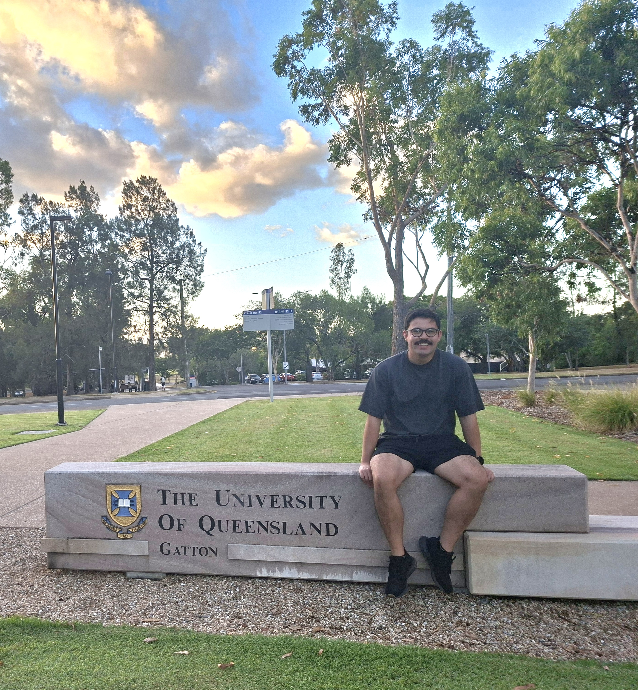
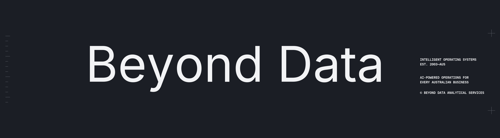

01
Applied machine learning
From forecasting and transfer learning to production workflows, I enjoy building models that are judged by practical usefulness, not novelty alone.
Researcher + Builder
I build applied AI systems for complex, high-stakes problems. Right now that means privacy-protecting digital twins for antimicrobial-resistance risk assessment.
I work as an AI Engineer at Beyond Data, building data and AI systems from architecture through to deployment. Alongside that, I'm undertaking a fully funded PhD in Artificial Intelligence at The University of Queensland, where I'm affiliated with the SAAFE CRC.

Current research direction
Cross-sectoral digital twins for antimicrobial resistance risk assessment, connecting technical rigour with real-world decision-making.
Overview
My background cuts across health, analytics, software, and AI engineering. That mix has shaped how I work: I like research that can survive contact with real constraints, and systems that do more than demo well.
I hold a Master of Analytics in Health from Massey University, am partway through a Master of Computer Science in AI at Monash University, and am undertaking a fully funded PhD in Artificial Intelligence at The University of Queensland.
The pattern is consistent across all of it: take messy domains, structure them well, and build the models, pipelines, and tools that lead to better decisions.
Focus Areas
01
From forecasting and transfer learning to production workflows, I enjoy building models that are judged by practical usefulness, not novelty alone.
02
I am especially interested in digital twins as a way to integrate multiple sectors, uncertain signals, and high-impact decisions into one workable modelling frame.
03
My industry work has centred on dashboards, internal tooling, pipelines, and decision-support systems that teams adopt because they remove real friction.
Selected Work
Research
My first-author paper in Energy and Buildings compared transformer architectures across 16 building datasets and demonstrated a 15.9% improvement in MAE for 24-hour forecasts using a multi-source transfer learning approach.

Industry
At Radix Nutrition, I led data science work spanning optimisation, claims substantiation, and internal product tooling. The result was 90%+ faster formulation iteration, 25%+ lower formulation costs, and decision support adopted across R&D and operations.
Build
I use this site, GitHub, and YouTube to document projects, share technical lessons, and make my thinking legible. I care about being able to show the work, not just list it.
Journey
I did not begin in computer science. Coming from health, sport, and human performance gave me a bias toward problems with real-world consequences, messy variables, and stakeholders from many disciplines.
That perspective still shapes my work today. I am most energised when a project needs both technical depth and translation across disciplines.
Contract role alongside the PhD, working across the full delivery lifecycle — from requirements and solution architecture through data engineering, ML development, and deployment.

Started April 2026, with expected completion in 2029. A fully funded RTP scholarship and SAAFE CRC top-up support work on privacy-protecting cross-sectoral digital twins for AMR risk assessment, supervised by Dr Noorul Amin and Professor Ricardo Soares Magalhães.

Joined as the first technical hire (Data Scientist, Apr 2024–Jan 2025), building data infrastructure and internal tools; promoted to Senior Data Scientist (Jan–Oct 2025), owning end-to-end AI and analytics for formulation, substantiation, and decision support.

Part-time, online; deepens formal AI training alongside research and industry work. Nine of twelve units complete, with the remaining coursework planned after doctoral confirmation, for expected completion in 2027.
Transformer-based forecasting and transfer learning for building energy prediction; first-author Q1 publication in Energy and Buildings.

Completed with Distinction; health analytics and methods training concurrent with the RA appointment.

Double majors in Human Performance Science and Community Health — the grounding in health, messy real-world data, and stakeholder context that still informs how I frame technical work.

Online Presence
On YouTube and online, I talk about career transitions into AI, the tools and models I use day to day, and the practical side of building technical capability over time.
The throughline is the same as my research and engineering work: curiosity, usefulness, and a bias toward making complex ideas easier to work with.
Connect
I'm always happy to connect with people working in artificial intelligence, health, complex systems, sustainability, and thoughtful technical communication.